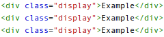
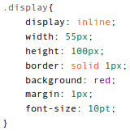
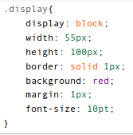
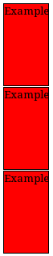

4.13.14
Display: Inline vs Block vs Inline Block
When perusing the differences between div ids and classes, one inevitably comes across the confounding "display: inline-block" property of a CSS div. Let's take a moment to examine this property, using some examples to help guide us.
Take a look at this HTML:
For our purposes here the HTML does not change. It is what is going on in the CSS that will make all the difference.
Now let's get into that CSS:
We've set the display to inline, like so (the other properties are there to help better visualize the example:
And look at the rendering in our browser:
As you can see, setting the display: inline makes the element tolerate other HTML that is next to it. These are the big softies of your page, they don't want to make things go down to a new line. They don't really care how close someone is standing next to it, they will happily comply. However, as we can see, the height/width parameters that we specified were ignored.
OK, now how about if we sett the display to block?
Doing this produces this result:
As you can see below, the "Block" mentality takes over, and the resultant divs are forced to a new line. The height/ width settings that we outlined are utilized.
Now let's go ahead and change our display: inline-block in our CSS:

Here's where the magic happens:

The elements retain their "block" attributes, but are displayed inline! Pretty neat, huh? This is great for making customizable nav bars.